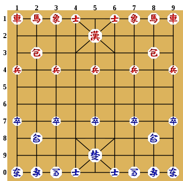
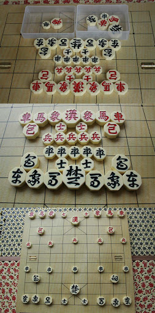

장기는 동양의 보드 게임이다.
기본적으로 초와 한의 진영이 있으며, 상대방의 '궁' 기물을 잡으면 이기는 게임이다. 초나라가 먼저 두고 한나라 초나라 한나라 초나라 이런 식으로 번갈아 가며 둔다. 단, 한나라가 어느 특정 기물을 떼어 놓고 시작하는 '접장기'는 한나라가 먼저 둔다.

1. 궁, 이외에 왕(王), 군(君), 장(將), 또는 장기말에 적힌 대로 한/초(漢/楚) 등, 다양한 이름으로 불린다. 이 말은 궁성(Fortress) 안에서만 한 칸씩 움직이며, 수직·수평선과 대각선을 따라 궁 내의 선을 따라서 움직일 수 있다.
2. 사, 오직 방어 하나만을 위해서만 존재하는 기물로 축구로 따지자면 골키퍼에 해당한다. 따라서 궁성 밖으로는 못 나간다. 3점으로, 궁과 같은 방법으로 움직인다.
3. 차, 13점이다. 수직 혹은 수평으로 원하는 만큼 이동할 수 있다. 단, 다른 말을 뛰어넘을 수는 없다. 또, 궁성 안에 들어가면 대각선으로도 이동할 수 있다. 가장 강력한 말이다.
4. 포, 7점으로, 무척 독특한 말이다. 차와 이동 경로가 같지만 다른 말을 꼭 한 개 넘어야만 이동이 가능하다는 점에서 차이가 있다. 넘어가는 말이 자기 말이든 상대 말이든 상관없지만, 어쨌든 포는 혼자서는 이동을 못 한다.
5. 마, 5점으로, 날 일(日)자 형태로 수직 또는 수평 방향으로 한 칸 갔다가 45도를 꺾어서 대각선으로 한 칸 또 가는 말이다. 체스의 나이트와 비슷하다. 다만, 나이트와 달리 이동하는 길목(이를 '멱'이라 칭한다)에 다른 말이 놓여 있으면 그 방향으로는 이동이 불가능하다. 하지만 이 규칙은 지역에 따라 다르다.
6. 상, 사(士)와 같이 3점으로, 마와 같지만 쓸 용(用)자 형태로 같은 대각선 방향으로 한 칸 더 간다는 차이점이 있다. 역시 마와 마찬가지로 멱이 막히면 못 가고, 이름이 '상'이라 그런지 엄청난 거리를 가는 데다, 도중에 멈출 수도 없는 만큼 운용하기 까다로운 편이다.
7. 졸/병, 초나라 쪽이 졸이고, 한나라 쪽이 병이다. 졸병이라는 말의 어원. 졸/병은 2점으로, 앞이나 옆으로 한 칸씩 가는 말이며 뒤로는 못 간다. 상대 궁성에 침투했다면 대각선을 따라 전진하는 것도 가능하다. 이름인 '졸'이나 '병'답게 보병 같은 특징을 가지고 있다. 크기도 작고 개개는 매우 허약한 말이지만, 대신 다른 말과는 달리 5개를 가지고 시작하는데다 서로 뭉치면 강해진다.